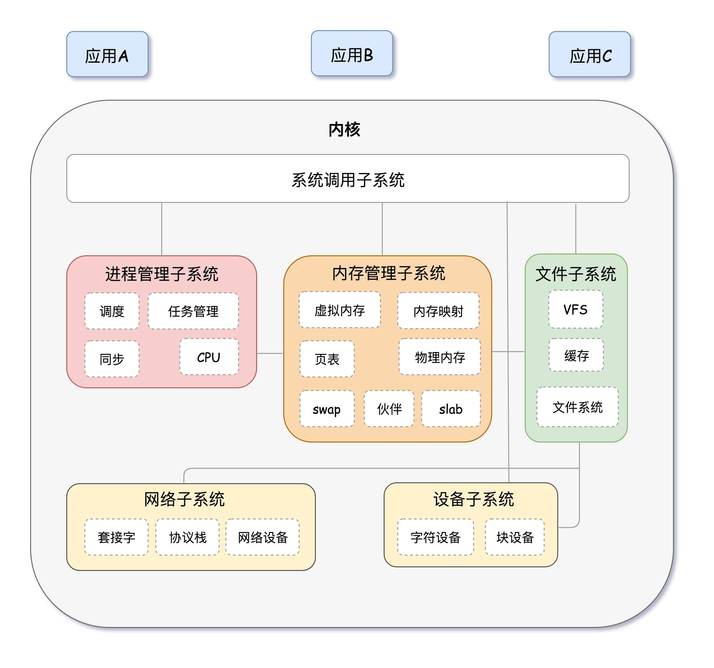
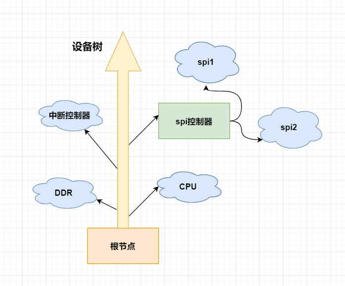
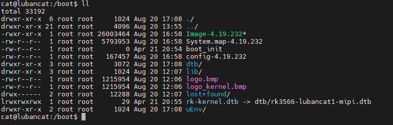

<!DOCTYPE lake>
<p data-lake-id="ub88ec2a5" id="ub88ec2a5"><span class="lake-fontsize-12" data-lake-id="u3f5bc1f7" id="u3f5bc1f7" style="color: rgb(64, 64, 64); background-color: rgb(252, 252, 252)">一个完整的linux系统，通常包含了Uboot、kernel、设备树以及根文件系统。</span></p><h1 data-lake-id="sl7DM" id="sl7DM"><span data-lake-id="u9747a253" id="u9747a253" style="color: rgb(64, 64, 64); background-color: rgb(252, 252, 252)">UBoot</span></h1><p data-lake-id="u45e994a6" id="u45e994a6" style="text-indent: 2em"><span class="lake-fontsize-12" data-lake-id="u2a6c90f3" id="u2a6c90f3" style="color: rgb(64, 64, 64); background-color: rgb(252, 252, 252)">Uboot的全称 Universal Boot Loader,是一个主要用于嵌入式系统的引导加载程序，是一套在GNU通用公共许可证之下发布的自由软件。遵循GPL条款的开源项目</span></p><p data-lake-id="u9f6cabd4" id="u9f6cabd4" style="text-indent: 2em"><span class="lake-fontsize-12" data-lake-id="u31e29040" id="u31e29040" style="color: rgb(64, 64, 64); background-color: rgb(252, 252, 252)">U-Boot的主要作用是用来启动操作系统内核，它分为两个阶段，即boot + loader， boot阶段启动系统，初始化硬件设备，建立内存空间映射图，将系统的软硬件带到一个合适的状态， loader阶段将操作系统内核文件加载至内存，之后跳转到内核所在地址运行。</span></p><h1 data-lake-id="qKexr" id="qKexr"><span data-lake-id="u9ab15374" id="u9ab15374" style="color: rgb(64, 64, 64); background-color: rgb(252, 252, 252)">Linux内核</span></h1><p data-lake-id="ueb3b1bc9" id="ueb3b1bc9"><span class="lake-fontsize-12" data-lake-id="ue7e87a91" id="ue7e87a91" style="color: rgb(64, 64, 64); background-color: rgb(252, 252, 252)">Linux是一种开源电脑操作系统内核。它是一个用C语言写成，符合POSIX标准的类Unix操作系统。 Linux内核是一个用来和硬件打交道并为用户程序提供一个有限服务集的低级支撑软件。一个计算机系统是一个硬件和软件的共生体，它们互相依赖，不可分割。计算机的硬件，含有外围设备、处理器、内存、硬盘和其他的电子设备组成计算机的发动机。但是没有软件来操作和控制它，自身是不能工作的。完成这个控制工作的软件就称为操作系统，在Linux的术语中被称为“内核”，也可以称为“核心”。Linux内核的主要模块（或组件）分以下几个部分：进程管理子系统、内存管理子系统、文件子系统、网络子系统、设备子系统等。</span></p><p data-lake-id="ub42ac753" id="ub42ac753"></p><h1 data-lake-id="IZLqT" id="IZLqT"><span data-lake-id="u2269e80b" id="u2269e80b">设备树</span></h1><p data-lake-id="udfc812de" id="udfc812de"><span class="lake-fontsize-12" data-lake-id="ub7291b33" id="ub7291b33" style="color: rgb(64, 64, 64); background-color: rgb(252, 252, 252)">设备树用于描述一个硬件平台的硬件资源。这个“设备树”可以被bootloader(uboot)传递到内核， 内核可以从设备树中获取硬件信息。 相当于使用定制的设备树就可以操作不一样的硬件资源， 比如i2c，spi,mipi，mini-pcie，i2s等接口，都是通过设备树去配置使能才能去正常操作它们。</span></p><p data-lake-id="u7b479713" id="u7b479713"></p><p data-lake-id="ua5e92a8d" id="ua5e92a8d"><span class="lake-fontsize-12" data-lake-id="u6ce8a31c" id="u6ce8a31c" style="color: rgb(64, 64, 64); background-color: rgb(252, 252, 252)">设备树以“树状”结构描述硬件资源。例如本地总线为树的“主干”在设备树里面称为“根节点”， 挂载到本地总线的spi总线为树的“枝干”在设备树里称为“根节点的子节点”， spi总线下的spi设备不止一个，这些“枝干”又可以再分。</span></p><p data-lake-id="ufb900939" id="ufb900939"><strong><span class="lake-fontsize-12" data-lake-id="ucd97308a" id="ucd97308a" style="color: rgb(64, 64, 64); background-color: rgb(252, 252, 252)">设备树的使用</span></strong></p><p data-lake-id="uf931e624" id="uf931e624"><span class="lake-fontsize-12" data-lake-id="u817a3057" id="u817a3057" style="color: rgb(64, 64, 64); background-color: rgb(252, 252, 252)">在LubanCat-RK系列的板子中，每块板子都有很多的主设备树，位于</span><span class="lake-fontsize-12" data-lake-id="ud6401b63" id="ud6401b63" style="color: rgb(64, 64, 64); background-color: rgb(252, 252, 252)"> </span><strong><span class="lake-fontsize-12" data-lake-id="u8aba1aca" id="u8aba1aca" style="color: rgb(64, 64, 64); background-color: rgb(252, 252, 252)">/boot/dtb</span></strong><span class="lake-fontsize-12" data-lake-id="ud38d2700" id="ud38d2700" style="color: rgb(64, 64, 64); background-color: rgb(252, 252, 252)"> </span><span class="lake-fontsize-12" data-lake-id="u542282c6" id="u542282c6" style="color: rgb(64, 64, 64); background-color: rgb(252, 252, 252)">里</span></p><p data-lake-id="u3ab6b40f" id="u3ab6b40f"><span class="lake-fontsize-12" data-lake-id="u1231e731" id="u1231e731" style="color: rgb(64, 64, 64); background-color: rgb(252, 252, 252)">由于我们的通用镜像需要支持很多不同的板子，因此，我们通过开机读取设备id改变设备树，从而适配不同的板子</span></p><p data-lake-id="u68eed576" id="u68eed576"><span class="lake-fontsize-12" data-lake-id="u8c30db90" id="u8c30db90" style="color: rgb(64, 64, 64); background-color: rgb(252, 252, 252)">LubanCat-RK系列的板子的设备树由一个文件来指定,它是 </span><strong><span class="lake-fontsize-12" data-lake-id="u7bc0c638" id="u7bc0c638" style="color: rgb(64, 64, 64); background-color: rgb(252, 252, 252)">/boot/rk-kernel.dtb</span></strong><span class="lake-fontsize-12" data-lake-id="u8c4427a6" id="u8c4427a6" style="color: rgb(64, 64, 64); background-color: rgb(252, 252, 252)"> ，如下图：</span></p><p data-lake-id="u100a0edb" id="u100a0edb"></p><h1 data-lake-id="iOiE1" id="iOiE1"><span data-lake-id="uf990e0df" id="uf990e0df">根文件系统</span></h1><p data-lake-id="uec8536ee" id="uec8536ee"><span class="lake-fontsize-14" data-lake-id="u00516c12" id="u00516c12" style="color: rgb(55, 65, 81); background-color: rgb(247, 247, 248)">根文件系统是指操作系统的基本文件系统，它包含了操作系统的核心文件和目录。根文件系统在Linux中被称为"/"（斜杠），它是整个文件系统层次结构的顶级目录。</span></p><p data-lake-id="u01190c55" id="u01190c55"><span class="lake-fontsize-14" data-lake-id="u2a1c6806" id="u2a1c6806" style="color: rgb(55, 65, 81); background-color: rgb(247, 247, 248)">根文件系统通常被挂载在计算机的硬盘或固态硬盘上的一个分区上，这个分区被称为根分区。在Ubuntu安装过程中，你可以选择将根文件系统安装到特定的分区上，这样操作系统就可以在该分区上访问和管理系统文件。</span></p><p data-lake-id="u166dc253" id="u166dc253"><span class="lake-fontsize-14" data-lake-id="ufffaea86" id="ufffaea86" style="color: rgb(55, 65, 81); background-color: rgb(247, 247, 248)">根文件系统包含了许多重要的目录和文件，例如：</span></p><ol list="uc341d9b1"><li data-lake-id="ub8bed73d" fid="u0a990bf7" id="ub8bed73d"><span class="lake-fontsize-14" data-lake-id="u2961b147" id="u2961b147" style="color: rgb(55, 65, 81); background-color: rgb(247, 247, 248)">/bin：包含了一些基本的可执行文件，如ls、cp和rm等。</span></li><li data-lake-id="u79cd05d3" fid="u0a990bf7" id="u79cd05d3"><span class="lake-fontsize-14" data-lake-id="u8b1ff8ff" id="u8b1ff8ff" style="color: rgb(55, 65, 81); background-color: rgb(247, 247, 248)">/boot：包含了启动系统所需的文件，例如内核和引导加载程序。</span></li><li data-lake-id="uf9f27ac6" fid="u0a990bf7" id="uf9f27ac6"><span class="lake-fontsize-14" data-lake-id="u56654fa2" id="u56654fa2" style="color: rgb(55, 65, 81); background-color: rgb(247, 247, 248)">/etc：包含了系统配置文件，如网络配置、用户管理和服务配置等。</span></li><li data-lake-id="u17e3d470" fid="u0a990bf7" id="u17e3d470"><span class="lake-fontsize-14" data-lake-id="u8e305058" id="u8e305058" style="color: rgb(55, 65, 81); background-color: rgb(247, 247, 248)">/home：包含了用户的个人目录，每个用户在此目录下有一个对应的子目录。</span></li><li data-lake-id="u25e1bf56" fid="u0a990bf7" id="u25e1bf56"><span class="lake-fontsize-14" data-lake-id="u08f5d9d9" id="u08f5d9d9" style="color: rgb(55, 65, 81); background-color: rgb(247, 247, 248)">/lib和/lib64：包含了系统所需的共享库文件。</span></li><li data-lake-id="u08680ab1" fid="u0a990bf7" id="u08680ab1"><span class="lake-fontsize-14" data-lake-id="u98333c49" id="u98333c49" style="color: rgb(55, 65, 81); background-color: rgb(247, 247, 248)">/sbin：包含了一些系统管理命令，只能由管理员运行。</span></li><li data-lake-id="ue9ea0a6a" fid="u0a990bf7" id="ue9ea0a6a"><span class="lake-fontsize-14" data-lake-id="ue13fff67" id="ue13fff67" style="color: rgb(55, 65, 81); background-color: rgb(247, 247, 248)">/usr：包含了系统的第二层次文件系统，包括了大部分用户安装的应用程序和文件。</span></li><li data-lake-id="ue04149b3" fid="u0a990bf7" id="ue04149b3"><span class="lake-fontsize-14" data-lake-id="u6ffc0fdc" id="u6ffc0fdc" style="color: rgb(55, 65, 81); background-color: rgb(247, 247, 248)">/var：包含了可变数据文件，如日志文件、数据库和缓存文件等。</span></li></ol><p data-lake-id="u07d5a62f" id="u07d5a62f"><span class="lake-fontsize-14" data-lake-id="u1e437d2a" id="u1e437d2a" style="color: rgb(55, 65, 81); background-color: rgb(247, 247, 248)">这些目录和文件组成了Ubuntu根文件系统的基本结构，它们共同支持着操作系统的正常运行和管理。</span></p>